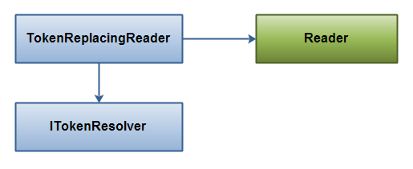

Java IO(4) 替换流，数组，文件或者大的字符串的一种方式
传统的字符替换，我们通常会想到使用 String.replace()，但是这个有些问题。
String.replace()每次替换，都会产生新的字符串，替换5次就产生5个新的字符串。这样空间复杂度就是 O(N*M)。N是字符串大小，M是替换的次数。这种情况下，如果是替换数据量大的字符串就会有内存问题。同样，这种方式也不利于扩展。
这篇文章通过使用自己实现的 TokenReplacingReader 来解决这个问题。
TokenReplacingReader 从标准的 Java.io.Reader 中读取字符数据（继承），所有可以使用 Reader的地方，就都可以使用 TokenReplacingReader 。
接着我们需要一个Token解析接口，用来解析替换字符：ITokenResolver ，整体关系图如下：

TokenReplacingReader 字符串替换用法：
public static void main(String[] args) throws IOException {
Map<String, String> tokens = new HashMap<String, String>();
tokens.put("token1", "value1");
tokens.put("token2", "JJ ROCKS!!!");
MapTokenResolver resolver = new MapTokenResolver(tokens);
Reader source =
new StringReader("1234567890${token1}abcdefg${token2}XYZ$000");
Reader reader = new TokenReplacingReader(source, resolver);
int data = reader.read();
while(data != -1){
System.out.print((char) data);
data = reader.read();
}
}TokenReplacingReader 流替换，文件替换，字符数组替换以及字符串替换，就可以改成如下的方式：
ITokenResolver resolver = ... ; // get ITokenResolver instance.
Reader reader = new TokenReplacingReader(
new InputStreamReader(inputStream), resolver);
Reader reader = new TokenReplacingReader(
new FileReader(new File("c:\\file.txt"), resolver);
Reader reader = new TokenReplacingReader(
new CharArrayReader(charArray), resolver);
Reader reader = new TokenReplacingReader(
new StringReader("biiig string...."), resolver);ITokenResolver 实现：
public interface ITokenResolver {
public String resolveToken(String tokenName);
}ITokenResolver 实现：
import java.util.HashMap;
import java.util.Map;
public class MapTokenResolver implements ITokenResolver {
protected Map<String, String> tokenMap = new HashMap<String, String>();
public MapTokenResolver(Map<String, String> tokenMap) {
this.tokenMap = tokenMap;
}
public String resolveToken(String tokenName) {
return this.tokenMap.get(tokenName);
}
}TokenReplacingReader实现：
import java.io.IOException;
import java.io.PushbackReader;
import java.io.Reader;
import java.nio.CharBuffer;
public class TokenReplacingReader extends Reader {
protected PushbackReader pushbackReader = null;
protected ITokenResolver tokenResolver = null;
protected StringBuilder tokenNameBuffer = new StringBuilder();
protected String tokenValue = null;
protected int tokenValueIndex = 0;
public TokenReplacingReader(Reader source, ITokenResolver resolver) {
this.pushbackReader = new PushbackReader(source, 2);
this.tokenResolver = resolver;
}
public int read(CharBuffer target) throws IOException {
throw new RuntimeException("Operation Not Supported");
}
public int read() throws IOException {
if (this.tokenValue != null) {
if (this.tokenValueIndex < this.tokenValue.length()) {
return this.tokenValue.charAt(this.tokenValueIndex++);
}
if (this.tokenValueIndex == this.tokenValue.length()) {
this.tokenValue = null;
this.tokenValueIndex = 0;
}
}
int data = this.pushbackReader.read();
if (data != '$') return data;
data = this.pushbackReader.read();
if (data != '{') {
this.pushbackReader.unread(data);
return '$';
}
this.tokenNameBuffer.delete(0, this.tokenNameBuffer.length());
data = this.pushbackReader.read();
while (data != '}') {
this.tokenNameBuffer.append((char) data);
data = this.pushbackReader.read();
}
this.tokenValue = this.tokenResolver
.resolveToken(this.tokenNameBuffer.toString());
if (this.tokenValue == null) {
this.tokenValue = "${" + this.tokenNameBuffer.toString() + "}";
}
if (this.tokenValue.length() == 0) {
return read();
}
return this.tokenValue.charAt(this.tokenValueIndex++);
}
public int read(char cbuf[]) throws IOException {
return read(cbuf, 0, cbuf.length);
}
public int read(char cbuf[], int off, int len) throws IOException {
int charsRead = 0;
for (int i = 0; i < len; i++) {
int nextChar = read();
if (nextChar == -1) {
if (charsRead == 0) {
charsRead = -1;
}
break;
}
charsRead = i + 1;
cbuf[off + i] = (char) nextChar;
}
return charsRead;
}
public void close() throws IOException {
this.pushbackReader.close();
}
public long skip(long n) throws IOException {
throw new RuntimeException("Operation Not Supported");
}
public boolean ready() throws IOException {
return this.pushbackReader.ready();
}
public boolean markSupported() {
return false;
}
public void mark(int readAheadLimit) throws IOException {
throw new RuntimeException("Operation Not Supported");
}
public void reset() throws IOException {
throw new RuntimeException("Operation Not Supported");
}
}原文：
http://tutorials.jenkov.com/java-howto/replace-strings-in-streams-arrays-files.html